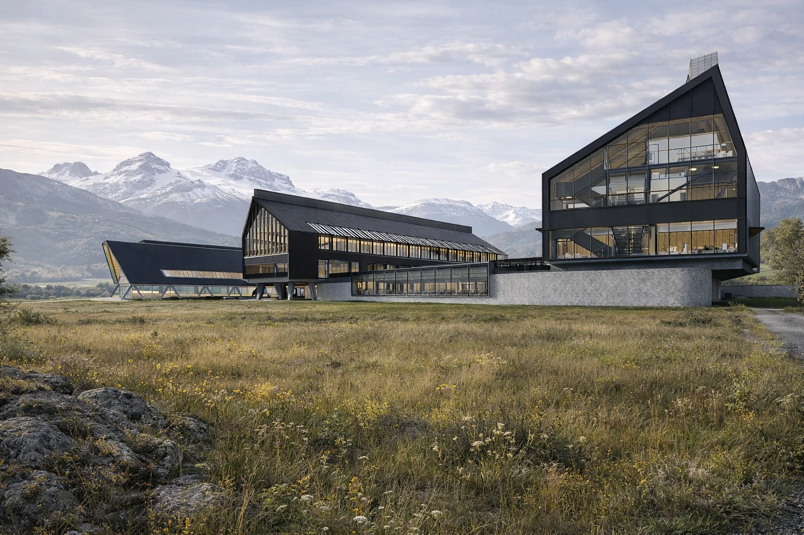
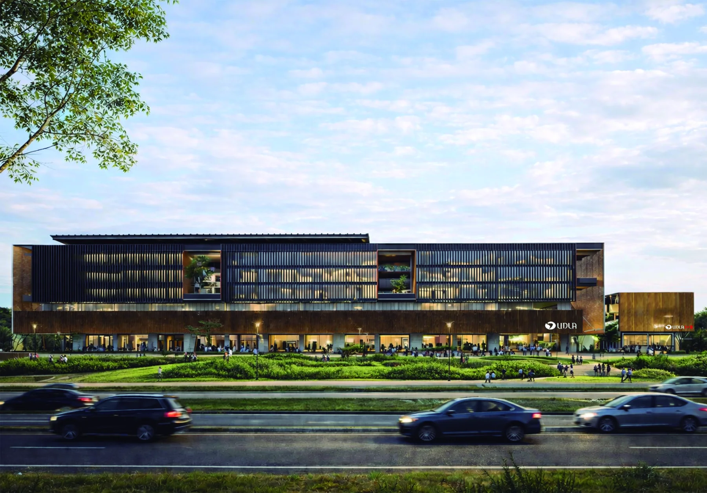
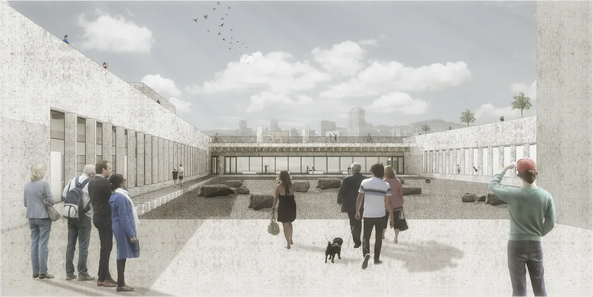
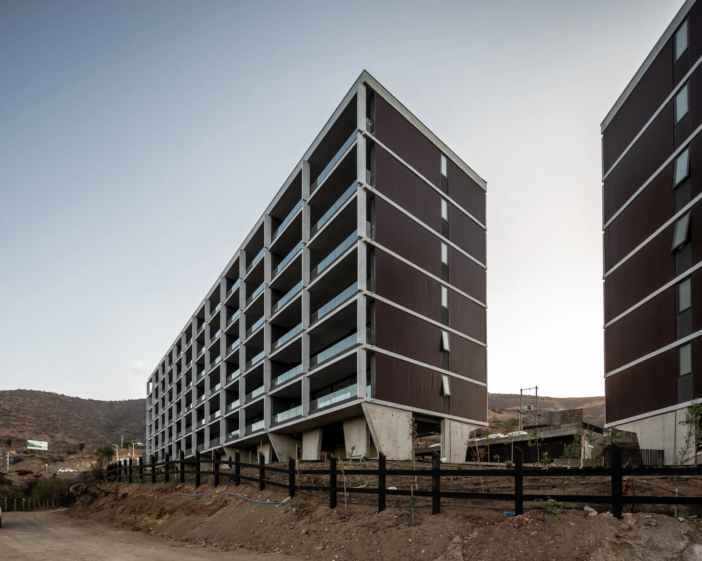
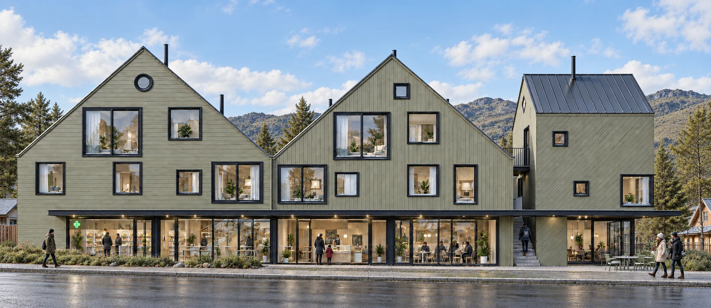
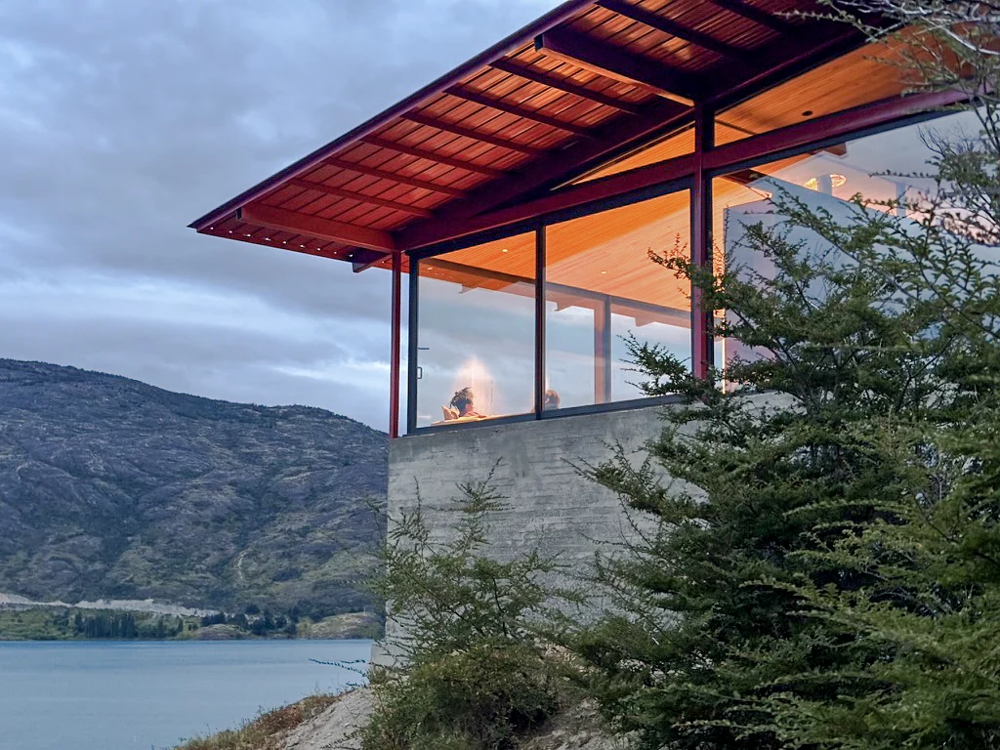
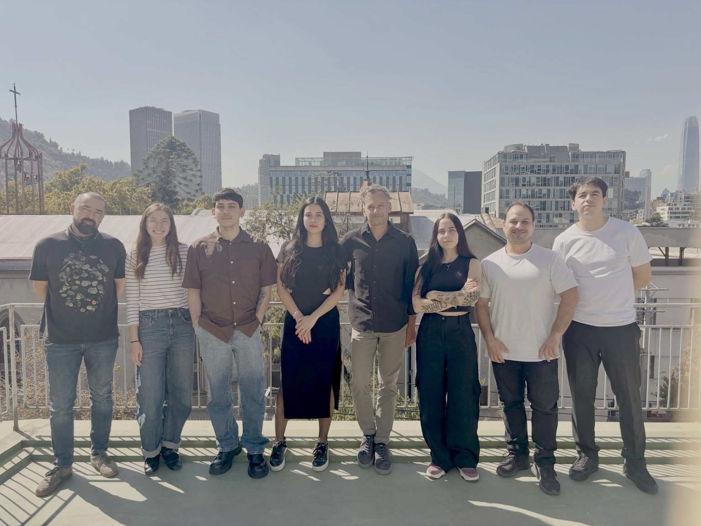

FAAD / Universidad Diego PortalesSantiago, Chile
Espacios para aprender,
encontrarse y habitar.
Arquitectura que nace del lugar.
Desde Santiago hasta la Patagonia.
Desde Santiago hasta la Patagonia.
Obras y proyectos
Selección / 01—06
01
Coyhaique · EducaciónUniversidad de Aysén

02
Concepción · EducaciónUDLA Concepción

03
Concepción · CulturaMuseo de la Memoria Biobío

04
Papudo · Vivienda colectivaConjunto Chagual

05
Puerto Guadal · Uso mixtoCentro Guadal

06
Patagonia · ViviendaCasa Ñire
El estudio
La arquitectura como
práctica compartida.
Fundado en 2010 por Francisco Cepeda y Álvaro Ramírez, OF Arquitectos desarrolla proyectos educacionales, obra pública, desarrollos inmobiliarios y vivienda, con obras a lo largo de Chile, del litoral central a la Patagonia.
Trabajamos con un equipo de colaboradores y en asociación con oficinas como MSRAA, Cavagnaro Rojo y MCRJAG, desde las condiciones de cada lugar y en distintas escalas.
Socios y trayectoria Premios y publicaciones Metodología BIM- años de trayectoria
- 16
- m² diseñados
- +200.000
- primeros lugares en concursos
- 11
